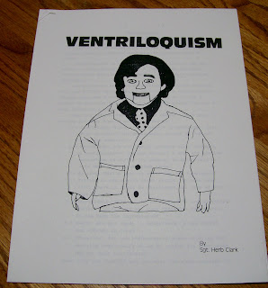

Untitled
12/16/2012
VENTRILOQUISM
From Sgt. Herb Clark's 15 page manual on how and why a person should become a ventriloquist with emphasis on the Christian experience.
What does it take to be a ventriloquist? DESIRE - PURPOSE
D- Discipline
E- Enthusiasm
S- Sharing
I- Ingredients
R-Ready
E-Education
P-Prepare
U-Use
R-Reason
P-Practice
O-Open
S-Speech
E-Excellence
Sgt. Clark briefly explains the importance of all the above. Plus he lists 20 pointers to consider while practicing and a second set of 21 pointers for Performance Preparation. He has advice on keeping a Joke File and more. I have a feeling this may have been prepared as an extensive lecture notes handout, but have no way of knowing for certain. There is no date of publication. 8.5" X 11"; 15 pages, staple in the upper left corner. Excellent condition - no markings.
For sale here: http://cgi.ebay.com/ws/eBayISAPI.dll?ViewItem&item=261142686888
From Sgt. Herb Clark's 15 page manual on how and why a person should become a ventriloquist with emphasis on the Christian experience.
What does it take to be a ventriloquist? DESIRE - PURPOSE
{kind=link}

D- Discipline
E- Enthusiasm
S- Sharing
I- Ingredients
R-Ready
E-Education
P-Prepare
U-Use
R-Reason
P-Practice
O-Open
S-Speech
E-Excellence
Sgt. Clark briefly explains the importance of all the above. Plus he lists 20 pointers to consider while practicing and a second set of 21 pointers for Performance Preparation. He has advice on keeping a Joke File and more. I have a feeling this may have been prepared as an extensive lecture notes handout, but have no way of knowing for certain. There is no date of publication. 8.5" X 11"; 15 pages, staple in the upper left corner. Excellent condition - no markings.
For sale here: http://cgi.ebay.com/ws/eBayISAPI.dll?ViewItem&item=261142686888